Cátedra 12: Transiciones de Fase
Cómo y por qué la materia cambia de estado: el gas de van der Waals como modelo para gases reales, la clasificación de transiciones, el equilibrio de fases y la ecuación de Clausius-Clapeyron.
Temas que cubre
- Gas de van der Waals: correcciones al gas ideal por volumen finito e interacciones
- Isotermas de van der Waals y la región inestable (bucle de Maxwell)
- Transiciones de primer orden: calor latente, coexistencia de fases
- Transiciones de segundo orden: sin calor latente, divergencia de $C_P$
- Diagrama de fases: curvas de coexistencia, punto triple, punto crítico
- Regla de las fases de Gibbs: $F = C - P + 2$
- Ecuación de Clausius-Clapeyron: pendiente de las curvas de coexistencia
Conceptos clave
Gas de van der Waals
Corrige el gas ideal con dos parámetros: $a$ (atracción entre moléculas, reduce la presión efectiva) y $b$ (volumen excluido por molécula). La ecuación $(P + aN^2/V^2)(V - Nb) = Nk_BT$ reproduce el comportamiento de gases reales y predice la licuefacción.
Transición de primer orden
El sistema salta discontinuamente entre dos fases (p.ej. líquido → vapor). Hay calor latente $L$: se absorbe energía sin que cambie $T$. La presión y temperatura de coexistencia satisfacen la ecuación de Clausius-Clapeyron.
Punto crítico
Temperatura y presión críticas $(T_c, P_c)$ donde la distinción entre líquido y vapor desaparece. Por encima del punto crítico existe el fluido supercrítico. En el punto crítico, $C_P \to \infty$ y la compresibilidad diverge.
Equilibrio de fases
Dos fases coexisten cuando tienen el mismo potencial químico $\mu$, la misma temperatura y la misma presión. La curva de coexistencia en el diagrama $P$-$T$ separa las regiones de estabilidad de cada fase; el punto triple es donde coexisten tres fases.
Fórmulas fundamentales



Qué hay que entender
- El gas de van der Waals es el modelo más simple que captura la transición líquido-vapor. Sus isotermas por debajo de $T_c$ tienen una región no física (presión que sube al aumentar el volumen), que se corrige con la construcción de Maxwell.
- En una transición de primer orden, al calentar a presión constante la temperatura se queda "fija" en el punto de coexistencia hasta que toda la fase cambia: el calor latente va a reorganizar la estructura, no a subir $T$.
- La ecuación de Clausius-Clapeyron explica por qué el agua hierve a menos de 100°C en la montaña (menor $P$) y por qué el hielo se funde bajo presión ($dP/dT < 0$ para agua, anomalía del agua).
- Las transiciones de segundo orden (p.ej. ferro–paramagnetismo, superconductividad) no tienen calor latente: el calor específico diverge en $T_c$.
- El potencial químico $\mu = (\partial F/\partial N)_{T,V}$ es la variable que se iguala en el equilibrio entre fases: $\mu_{\text{líq}} = \mu_{\text{vap}}$.